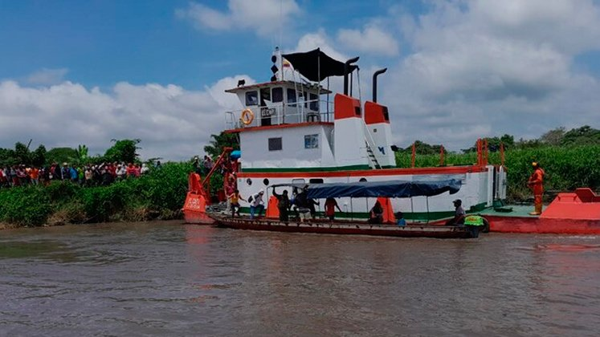
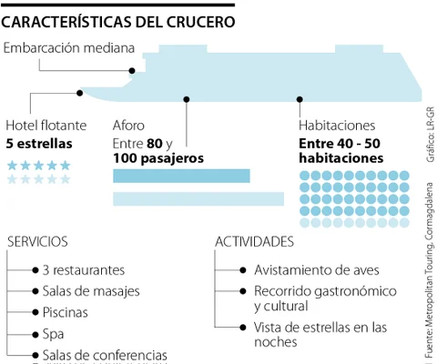

En 2025 saldrá el primer crucero por el río Magdalena: precios y ruta
La capacidad de los cruceros será entre 60 y 64 personas y el recorrido iniciará en Cartagena y pasará por municipios de Bolívar y Atlántico.
La primera ruta del crucero de lujo que navegará por el río Magdalena, la corriente de agua más importante de Colombia, zarpará el 25 de enero de 2025, así lo confirmaron desde Amawaterways, empresa de cruceros fluviales con sede en Calabasas, California, que ofrece cruceros en Europa, África meridional, el sudeste de Asia, Sudamérica y que operará las rutas en Bolívar, Colombia. El recorrido iniciará en Cartagena y pasará por las poblaciones de Calamar, Mompox, Magangué y San Basilio de Palenque, además de Barranquilla, sectores del Atlántico y Magdalena. También se tendrá una estación ingresando por el Canal del Dique, en el corregimiento de Gambote (Arjona). “Cartagena está lista para ser el gran punto de zarpe de este crucero. Así que se vienen grandes cosas para Cartagena y la región el próximo año en materia de turismo y fortalecimiento de nuestra ciudad como referente a nivel mundial”, manifestó el gobernador de Bolívar, Yamil Arana, quien encabeza este gran proyecto.
Además del recorrido, el crucero brindará experiencias como celebraciones especiales del Carnaval de Barranquilla, recorridos por los centros históricos de los municipios, avistamiento de aves, explorar la flora y fauna aledaña al río Magdalena, experiencias en “pola”, el principal medio de transporte de Calamar, y más. Carmen Caballero, presidenta de ProColombia, señaló: “Además de los beneficios inmediatos que estos importantes viajes tendrán en el desarrollo social y económico de nuestros territorios, cabe mencionar que AmaWaterways busca abastecer sus barcos con productos hechos en Colombia. Esto significa que también tenemos una oportunidad de equiparar nuestra oferta exportable diversificada y hacerla parte de la cadena productiva del turismo”.
¿Qué cuesta la experiencia en crucero por el río Magdalena? De acuerdo con Revista Semana, “los precios de los planes de crucero de AmaWaterways oscilan entre los 3.000 y 5.000 dólares. Esta empresa, que tiene presencia en Europa y Asia, también ofrecerá experiencias terrestres para recorrer los lugares más icónicos”.
